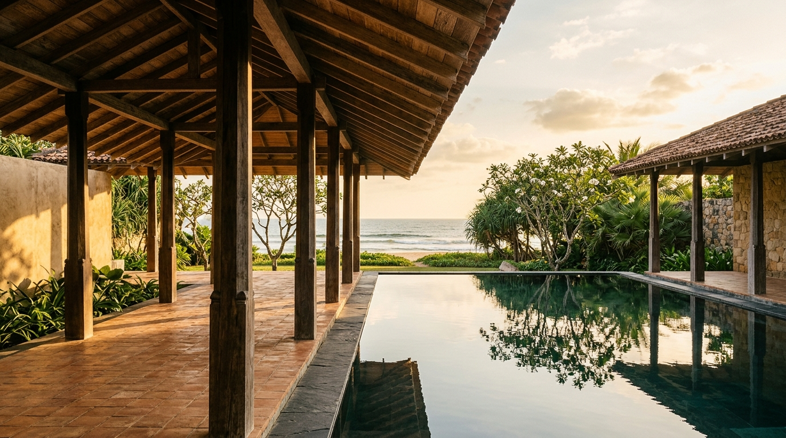
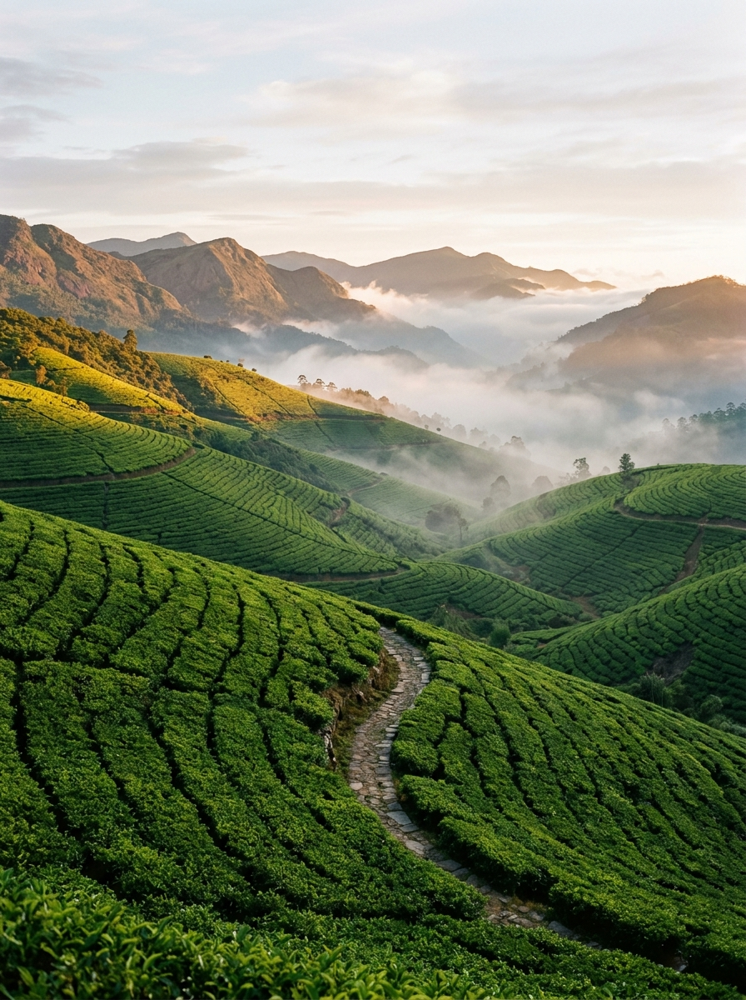

TROPICAL MODERNISM · BENTOTA TO KANDALAMA
07°57'25"N · 80°45'35"E — ISLAND OF SERENDIB
An editorial atlas and monsoon-aware journey studio for Sri Lanka—moving effortlessly from fifth-century sky citadels and misty rail viaducts to quiet leopard scrub and coral-stone forts.
Sri Lanka defies linear travel checklists.
Open any field dossier for optimal daylight hours, authentic kitchen notes, and cultural etiquette.
Select your travel month below to inspect dry coastlines and calm seas.
SEASON KEY
Each itinerary stays two to three nights per sanctuary.
Open-air verandas, blue highland trains, and toasted spices.


SELECTED SHORTLIST